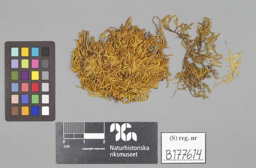

Regmatodontaceae
No widely recognized common name
Regmatodontaceae is a small family of pleurocarpous mosses belonging to the order Hookeriales. It comprises a single genus, Regmatodon, found primarily in tropical and subtropical regions. These mosses typically grow as mats on tree bark (epiphytic) or rocks (epilithic) in humid environments.
Overview
The Regmatodontaceae family represents a distinct lineage within the diverse order Hookeriales. As pleurocarpous mosses, they exhibit a creeping growth habit with lateral branching and sporophytes arising from short side branches. The family is characterized by its single genus, Regmatodon, which contains only a few species (typically 2-3 recognized).
These mosses are adapted to shaded, moist habitats in warmer climates, often forming distinctive, somewhat glossy mats on tree trunks, branches, or shaded rock surfaces. Their relatively small size and specific habitat requirements make them less conspicuous than some other moss families, but they are an important component of bryophyte diversity in tropical and subtropical ecosystems.
Taxonomically, the family is defined by a combination of gametophytic features (leaf shape, cell structure) and, crucially, sporophytic characteristics, particularly the structure of the double peristome within the capsule, which regulates spore dispersal.
Quick Facts
- Scientific Name: Regmatodontaceae
- Common Name: None widely recognized
- Number of Genera: 1 (Regmatodon)
- Number of Species: Approximately 2-3
- Distribution: Pantropical and Subtropical
- Evolutionary Group: Bryophytes - Mosses (Class Bryopsida, Order Hookeriales)
Key Characteristics
Growth Form and Habit
Plants are pleurocarpous, meaning they grow in a creeping fashion with stems spreading horizontally and branching irregularly. They form loose to dense mats, typically light green to yellowish-green, sometimes glossy when dry. Stems are often prostrate with ascending branches. They are primarily epiphytic (growing on bark) or epilithic (growing on rocks).
Leaves
Leaves are typically arranged spirally around the stem but often appear somewhat flattened (complanate) or secund (curved to one side). They are usually ovate-lanceolate to oblong-lanceolate in shape, often concave, and may be asymmetric. The leaf apex is typically acute to acuminate. Margins are generally entire or finely serrulate near the apex. The costa (midrib) is single and usually ends well below the leaf apex, sometimes reaching only mid-leaf. Leaf cells are typically smooth, rhomboidal to elongate-hexagonal, with thicker walls.
Gametangia and Sporophytes
As mosses, Regmatodontaceae reproduce via spores produced in sporophytes. Gametangia (reproductive organs) are borne on short lateral branches.
- Seta: The stalk supporting the capsule is typically elongate, smooth, and often reddish or brownish.
- Capsule: The spore-containing structure is usually erect to slightly inclined, ovoid to cylindrical, and symmetric. An operculum (lid) covers the capsule mouth, often with a distinct beak (rostrate).
- Peristome: Located beneath the operculum, the peristome is crucial for identification. It is double, consisting of:
- An outer ring (exostome) of 16 lanceolate teeth, often papillose or cross-striolate at the base.
- An inner ring (endostome) with a basal membrane, well-developed segments, and sometimes rudimentary cilia. The specific structure of the peristome teeth and segments helps define the family and genus.
Spores
Spores are typically small, spherical, and lightly papillose. They are released from the capsule when the operculum detaches and the peristome teeth flex in response to humidity changes, aiding in dispersal by wind.
Field Identification
Identifying Regmatodontaceae in the field requires careful observation, often needing magnification (hand lens or microscope) for confirmation. Focus on the combination of growth habit, leaf features, and habitat.
Primary Identification Features
- Pleurocarpous Growth: Look for creeping stems forming mats, not upright tufts.
- Habitat: Typically found on bark or shaded rocks in humid tropical/subtropical forests.
- Leaf Shape and Costa: Observe the ovate-lanceolate leaves, often somewhat complanate, with a single costa ending well below the apex.
- Smooth Leaf Cells: Cells appear smooth (non-papillose) under magnification.
- Peristome Structure (Microscopic): Confirmation often requires examining the double peristome of a mature, deoperculate capsule. The specific pattern of the exostome and endostome is diagnostic.
Secondary Identification Features
- Leaf Arrangement: Note if leaves appear flattened in one plane (complanate).
- Capsule Orientation: Capsules are generally erect to slightly inclined on elongated setae.
- Glossy Appearance: Plants may have a slight sheen, especially when dry.
Seasonal Identification Tips
- Gametophyte: The main green plant (gametophyte) is present year-round.
- Sporophytes: Capsules on stalks (sporophytes) are more seasonal, often maturing during or after rainy seasons. Look for capsules in various stages of development for identification features like the peristome.
Common Confusion Points
- Other Hookeriales Families: Can be confused with other pleurocarpous mosses in the Hookeriales order (e.g., Hookeriaceae, Daltoniaceae, Pilotrichaceae) which share similar habitats and growth forms. Microscopic examination of leaf cell details and peristome structure is often necessary to distinguish them.
- Other Pleurocarpous Mosses: Various unrelated pleurocarpous mosses might resemble Regmatodon superficially. Check costa length, leaf cell shape, and capsule/peristome features carefully.
Field Guide Quick Reference
Look For:
- Pleurocarpous mats on bark/rock
- Humid tropical/subtropical habitats
- Ovate-lanceolate leaves
- Single costa ending mid-leaf or below apex
- Smooth, rhomboidal/hexagonal leaf cells
- Erect/inclined capsules on long setae
- (Microscopic) Double peristome with specific structure
Key Variations:
- Degree of leaf complanation
- Leaf apex sharpness
- Presence/absence of sporophytes
Notable Examples
The Regmatodontaceae family is monotypic, containing only the genus Regmatodon. The species within this genus share the core characteristics of the family.

Regmatodon Brid.
(Genus; specific species include R. orthostegius)
The sole genus of the family, Regmatodon, encompasses species like R. orthostegius. These mosses exhibit the characteristic pleurocarpous growth, ovate-lanceolate leaves with short single costae, smooth rhomboidal cells, and erect capsules with a distinctive double peristome. They are key indicators of undisturbed, humid forest environments in their tropical/subtropical range.
Phylogeny and Classification
Regmatodontaceae is placed within the order Hookeriales, a large and diverse group of primarily tropical pleurocarpous mosses, nested within the subclass Bryidae of the Class Bryopsida. Molecular phylogenetic studies confirm its position within Hookeriales, though its exact relationship to other families in the order continues to be refined.
The Hookeriales are characterized by features such as often complanate foliage, specific leaf cell patterns (though variable), and typically well-developed double peristomes. Regmatodontaceae is distinguished from related families by its specific combination of leaf areolation (cell pattern), costa length, and peristome morphology.
Position in Plant Phylogeny
- Kingdom: Plantae
- Division: Bryophyta (Mosses)
- Class: Bryopsida
- Subclass: Bryidae
- Superorder: Hypnanae
- Order: Hookeriales
- Family: Regmatodontaceae
Evolutionary Significance
Regmatodontaceae, as part of the Hookeriales, represents a significant radiation of pleurocarpous mosses adapted primarily to moist, shaded, tropical and subtropical environments. Key evolutionary aspects include:
- Adaptations to Epiphytism/Epilithism: Development of growth forms and potentially physiological traits suited for living on bark or rock surfaces in humid conditions.
- Peristome Specialization: The complex double peristome found in Hookeriales, including Regmatodontaceae, is a sophisticated mechanism for regulated spore dispersal, reflecting adaptation to specific environmental triggers (humidity changes).
- Biogeography: The pantropical distribution suggests ancient origins and dispersal patterns across Gondwanan landmasses or later long-distance dispersal events.